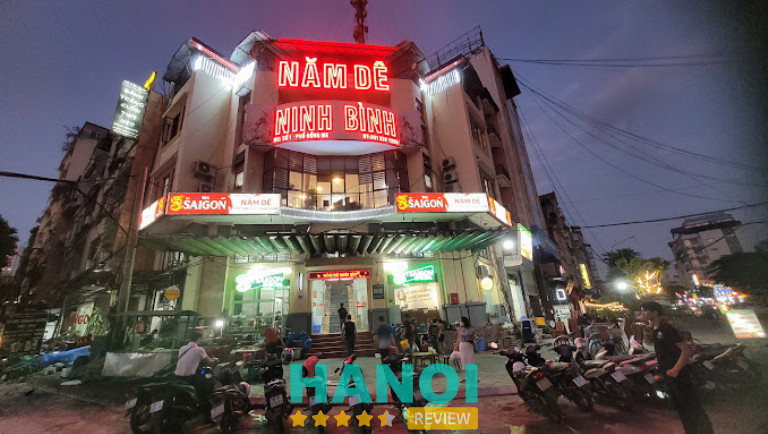
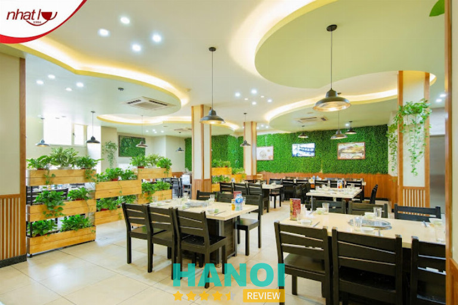
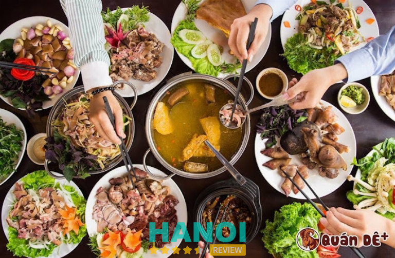
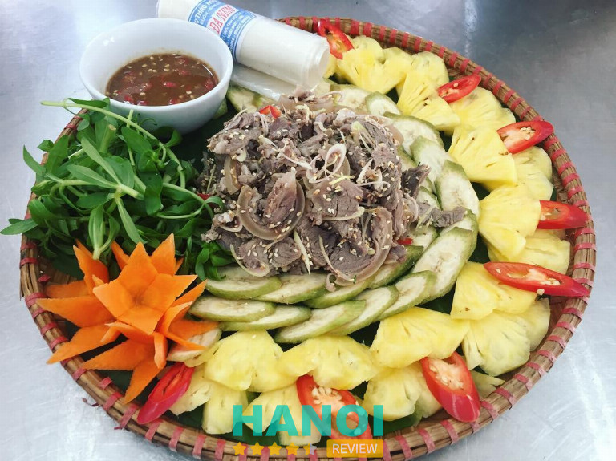
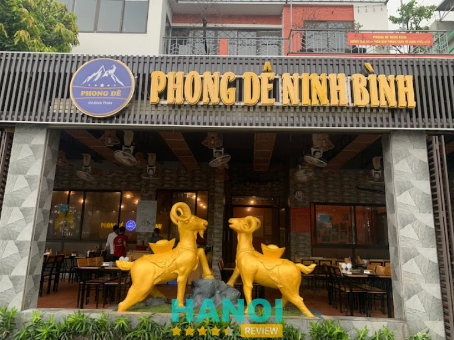
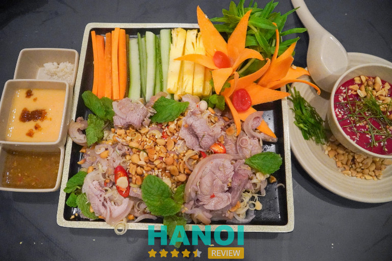
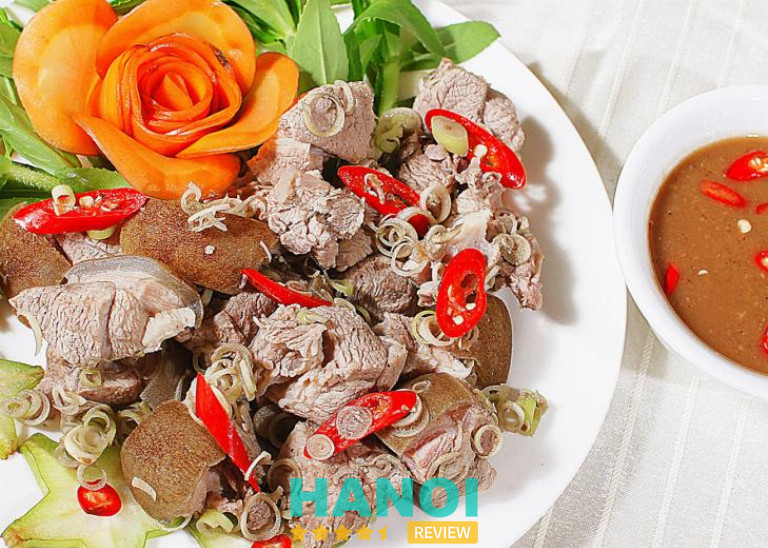
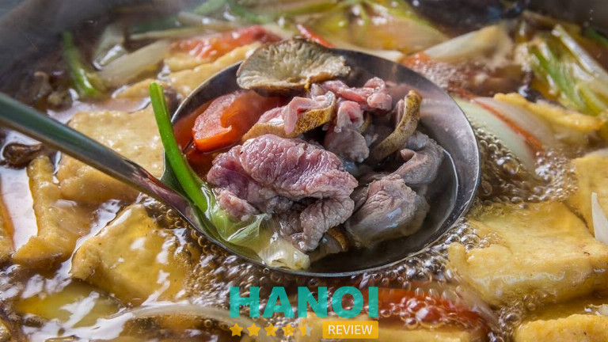

10 Quán dê tại Hà Nội thực đơn đa dạng, dịch vụ chất lượng
Với mong muốn mang lại cho thực khách nhiều món ăn bổ dưỡng, thơm ngon hấp dẫn được chế biến từ thịt dê, những quán dê ngon nổi tiếng ở Hà Nội đem đến thực đơn đa dạng, đầy đủ các món để bạn thỏa sức thưởng thức.
Top 10 Quán dê ở Hà Nội ngon nhất
Thịt dê là một loại thịt có hàm lượng chất dinh dưỡng phong phú lại có thể chế biến thành rất nhiều món ăn hấp dẫn mang lại rất nhiều lợi ích đối với sức khỏe.
Ở Thủ Đô không khó để tìm được một quán dê, nhưng đâu mới là quán uy tín, đảm bảo nguyên liệu tươi ngon, chế biến sạch sẽ, hấp dẫn thì vẫn là câu hỏi đặt ra. Nếu còn băn khoăn trong việc lựa chọn, bạn có thể tham khảo qua 10 gợi ý dưới đây.
Ẩm thực dê Song Dương
Là một địa chỉ nổi tiếng với hàng loạt những món ăn siêu hấp dẫn từ thịt dê, quán Ẩm thực dê Song Dương thu hút đông đảo thực khách đến thưởng thức mỗi ngày.
Ấn tượng đầu tiên khi bước vào quán là không gian rộng rãi, thoáng mát, được thiết kế theo môt phong cách rất riêng, đó là sự kết hợp hài hòa giữa truyền thống với hiện đại nhưng cũng không kém phần ấm cúng.
Đến với Ẩm thực dê Song Dương bạn sẽ có cơ hội thưởng thức một thực đơn phong phú với hơn 50 món dê hấp dẫn, thơm ngon được chế biến cầu kỳ, công phu bởi những đầu bếp trên 20 năm kinh nghiệm, chắc chắn sẽ vừa lòng mọi thực khách dù là khó tính nhất.
Điểm khiến thực khách mê mẩn nhất phải nhắc đến phần thịt dê ngọt mềm, béo ngậy được tuyển chọn khắt khe từ những con dê chăn thả tự do trên núi đồi, chỉ ăn lá non trên cây và uống nước suối sạch, sơ chế cẩn thận nên không bị hôi mà còn mang hương vị đặc sắc, thơm ngon lôi cuốn đến không thể cưỡng lại.
Tại đây, đội ngũ nhân viên được đào tạo bài bản, phục vụ nhiệt tình, chu đáo, hứa hẹn mang đến cho thực khách những trải nghiệm ẩm thực hoàn hảo và dễ chịu nhất.
Không chỉ nổi tiếng nhờ món ăn chất lượng, Ẩm thực dê Song Dương còn ghi điểm bởi mức giá phải chăng cùng nhiều chương trình ưu đãi vô cùng hấp dẫn, vì vậy càng khẳng định đây là điểm đến lý tưởng cho những buổi liên hoan hay tụ tập gia đình quây quần bên nhau.
Thông tin liên hệ:
- Địa chỉ: 39 P. Trần Kim Xuyến, Yên Hoà, Cầu Giấy, Hà Nội
- Điện thoại: 0934203939
- Emaill: mcc.migroup@gmail.com
- Website: songduong.com
- Fanpage: FB.com/songduongrestaurant/
Nhà hàng Năm Dê
Tọa lạc tại một vị trí khá đắc địa ở quận Nam Từ Liêm, Nhà hàng Năm Dê là điểm dừng chân lý tưởng cho những ai là tín đồ yêu thích ẩm thực đặc sản dê núi Ninh Bình, đang tìm quán dê thơm ngon, chất lượng tại Hà Nội.

Bước chân vào nhà hàng này bạn sẽ không khỏi choáng ngợp trước không gian vô cùng rộng rãi, thoáng mát, cách bày trí tinh tế, đẹp mắt, bàn ghế được sắp xếp khoa học, sạch sẽ đem đến cảm giác dễ chịu, thoải mái cho thực khách.
Sở hữu thực đơn đa dạng với nhiều món dê khác nhau từ dê hấp, dê xào, dê nướng, lẩu dê…trong đó đặc sắc nhất phải kể đến là tái dê, dê xào lăn hay dê nướng tảng, được thực khách khen nức nở về hương vị thơm ngon, đặc trưng.
Thế mạnh của nhà hàng này là có đội ngũ đầu bếp giàu kinh nghiệm, am hiểu sâu sắc về cách chế biến thịt dê, đặc biệt sáng tạo trong cách kết hợp nguyên liệu, gia vị để để tạo ra những món ăn hấp dẫn và đẹp mắt.
Điểm cộng của quán là thịt dê mềm dai vừa phải, được chọn lọc kĩ càng từ nguồn uy tín, trải qua quá trình sơ chế cẩn thận, nên không bị hôi tanh, đặc biệt được ướp gia vị vừa ăn, phù hợp với khẩu vị của tất cả mọi người.
Một điểm hấp dẫn khác của Nhà hàng Năm Dê là giá cả cực phải chăng và hợp lý, phù hợp với nhiều đối tượng khách hàng khác nhau, đội ngũ nhân viên chuyên nghiệp phục vụ chu đáo và nhiệt tình nên đã làm vừa lòng mọi thực khách đến đây.
Thông tin liên hệ:
- Địa chỉ: 1 Đồng Me, Mễ Trì, Nam Từ Liêm, Hà Nội
- Điện thoại: 096 151 28 88
- Fanpage: FB.com/namdeninhbinh/
Lẩu Dê Nhất Ly
Lẩu Dê Nhất Ly là một trong những quán lẩu dê cực ngon ở Hà Nội mà bạn không thể bỏ qua, với hương vị thơm ngon đặc trưng, quán ăn này đã thành công ghi điểm được với nhiều thực khách và được ưu tiên lựa chọn mỗi khi tụ tập nhóm, gia đình hay bạn bè.

Điểm ấn tượng đầu tiên của quán lẩu dê này là thịt dê ngọt mềm, da giòn sần sật, được chọn lọc kĩ càng từ những con dê núi khỏe mạnh, chăn thả tự nhiên, trải qua quá trình sơ chế cẩn thận nên đảm bảo độ tươi ngon và không hề có mùi tanh.
Thêm nữa là phần nước dùng được hầm từ xương dê với thuốc bắc nên có vị ngọt thanh, thơm nhẹ nhàng khiến bất kỳ thực khách nào cũng khó lòng chối từ, kể cả những người khó tính nhất.
Điểm cộng của quán là có đội ngũ nhân viên chuyên nghiệp, phục vụ chu đáo, sẵn sàng lắng nghe và đáp ứng mọi nhu cầu một cách nhanh chóng vì vậy đã thành công ghi điểm trong lòng khách hàng.
Ngoài lẩu dê đặc sắc, quán còn có rất nhiều món ngon từ dê khác như dê xào sả ớt, dê nướng, dê hấp, dê tái chanh,… để thực khách tha hồ lựa chọn món ăn phù hợp với khẩu vị cũng như sở thích của mình.
Bên cạnh đồ ăn ngon, phục vụ chuyên nghiệp, không gian của Lẩu Dê Nhất Ly cũng rất rộng rãi và sạch sẽ. Bàn ghế được sắp xếp đẹp gọn gàng, khu vực để xe rộng rãi, an toàn hứa hẹn mang đến cho thực khách những trải nghiệm tuyệt vời.
Thông tin liên hệ:
- Địa chỉ: 15A Hàng Cót, Hàng Mã, Hoàn Kiếm, Hà Nội
- Điện thoại: 0946 887 355
- Email: nhatly.hp1994@gmail.com
- Website: nhatly.com.vn
- Fanpage: FB.com/laudenhatly
Ok Con Dê
Quán Ok Con Dê là điểm đến tiếp theo dành cho những tín đồ mê thịt dê đang tìm kiếm quán dê ngon Hà Nội. Sở hữu menu đa dạng phong phú, các món ăn được chế biến một cách tỉ mỉ và độc đáo, quán thành công xây dựng được một chỗ đứng vững chắc trong lòng người dân “sành ăn” Hà thành.
Không phải ngẫu nhiên mà nhà hàng thu hút ngày càng nhiều thực khách đến thưởng thức như vậy, đó là cả một quá trình nỗ lực đổi mới, hoàn thiện và nâng cao chất lượng đồ ăn cũng như dịch vụ để làm vừa lòng mọi khách hàng.
Có thể nói lẩu dê và thịt dê nướng là những món đặc sắc nhất ở quán này mà bạn nhất định phải nếm thử ít nhất một lần khi đến đây. Thịt dê được tuyển chọn từ những con dê tươi ngon nhất, được chế biến kỹ lưỡng, tẩm ướp khéo léo bởi đôi bàn tay chuyên nghiệp của những người đầu bếp tài ba nên khách hàng không khỏi xuýt xoa.
Đến đây bạn sẽ nhận được sự đón tiếp nồng nhiệt, đội ngũ nhân viên thân thiện, phục vụ nhiệt tình, chu đáo, hứa hẹn mang đến cho thực khách những trải nghiệm ăn uống thoải mái, dễ chịu nhất.
Không gian tại quán Ok Con Dê cũng vô cùng rộng rãi, thoáng mát với sức chứa lớn, có chỗ để xe an toàn, do đó bạn thỏa sức tụ tập cùng bạn bè, đồng nghiệp hay gia đình.
Thông tin liên hệ:
- Địa chỉ: 03 TT1A Đường Bằng Liệt, Tây Linh Đàm, Q. Hoàng Mai, Hà Nội
- Điện thoại: 098 713 33 99
- Website: okconde.vn
- Fanpage: FB.com/okconde.vn/
Quán dê +
Sẽ thật thiếu sót nếu như nhắc đến các quán dê ngon nổi tiếng ở Hà Nội mà lại bỏ qua Quán dê +, quán được nhiều thực khách yêu thích bởi hương vị độc đáo cùng phong cách phục vụ chuyên nghiệp.

Điểm nổi bật thu hút thực khách đó là thực đơn phong phú với đủ các món từ thịt dê như như dê xông hơi, dê tái chanh, dê nướng và lẩu dê,…món nào cũng được tẩm ướp đậm đà, sơ chế cẩn thận khiến thực khách không khỏi tấm tắc xuýt xoa.
Bí quyết làm lên thành công của Quán dê + có lẽ là thịt dê được lựa chọn tươi ngon, được chế biến vô cùng cầu kỳ, chuyên nghiệp, mang đến những hương vị hấp dẫn, kích thích vị giác của thực khách.
Không những vậy, những món ăn tại đây còn được bày trí rất đẹp mắt, khâu vệ sinh an toàn thực phẩm luôn được đảm bảo vì vậy thực khách hoàn toàn có thể yên tâm thưởng thức.
Ngoài ra, Quán dê + còn ghi điểm bởi không gian rộng rãi, thoáng mát, bàn ghế được xếp ngăn nắp, gọn gàng, sạch sẽ, đặc biệt quán cũng có phòng riêng với không gian yên tĩnh, tạo điều kiện cho thực khách có những khoảnh khắc riêng tư bên bạn bè và gia đình.
Điều đáng chú ý hơn là mức giá ở đây vô cùng hợp lý, phù hợp với tất cả các thực khách, nhân viên phục vụ cực nhanh nhẹn, chu đáo, sẵn sàng lắng nghe và đáp ứng mọi yêu cầu của khách hàng.
Thông tin liên hệ:
- Địa chỉ: 59 P. Yên Lãng, Trung Liệt, Q, Đống Đa, Hà Nội
- Điện thoại: 0979 885 959
- Fanpage: FB.com/QuanDe.59YenLang/
Quán Dê Hải Phi
Với hơn 35 năm kinh nghiệm trong nghề, Quán Dê Hải Phi luôn nỗ lực không ngừng để mang đến cho thực khách những món thịt dê thơm ngon và cam kết sẽ không làm thực khách thất vọng về chất lượng đồ ăn cũng như dịch vụ của quán.
Quán Dê Hải Phi làm mê mẩn bao thực khách bởi thực đơn đa dạng các món ăn cực ngon được chế biến từ thị dê như như dê nướng, lẩu dê, dê tái chanh mềm, dê chao,…để khách hàng thỏa sức trải nghiệm.

Dê tại đây là loại tươi ngon với thịt săn chắc, được lựa chọn kỹ lưỡng từ Sơn La, khâu chế biến công phu theo công thức đặc trưng riêng nên mang theo hương vị thơm ngon, lôi cuốn đến không thể cưỡng lại.
Điểm cộng của quán còn nằm ở không gian rộng rãi, sạch sẽ, cách bày trí tinh tế mang lại cảm giác thoải mái cho bất kỳ thực khách nào đến đây, nhân viên phục vụ tận tâm, chu đáo làm vừa lòng mọi khách hàng.
Ngoài ra, Quán Dê Hải Phi được đánh giá là có mức giá giá phải chăng, phù hợp với nhiều đối tượng khách hàng khác nhau. Đặc biệt địa chỉ này còn nhận ship hàng đến tận nơi vô cùng thuận tiện, nhờ đó bạn chẳng phải đi đâu xa xôi, chỉ cần ở nhà mà vẫn được thưởng thức hương vị thơm ngon hấp dẫn của các món dê ở quán này.
Thông tin liên hệ:
- Địa chỉ: A16-TT17 Nguyễn Khuyến, Q. Hà Đông, Hà Nội
- Điện thoại: 097 491 40 10
- Fanpage: FB.com/HaiPhiThitDeVQ/
Phong Dê Ninh Bình
Một trong những quán dê Ninh Bình nức tiếng thơm ngon, hấp dẫn ở Hà Nội, được rất nhiều thực khách yêu thích, thường xuyên ghé đến thưởng thức đó chính là quán Phong Dê Ninh Bình.
Quán Phong Dê tự hào khi sở hữu đội ngũ đầu bếp tài ba, giàu kinh nghiệm, với sự khéo léo trong cách chế biến đã tạo ra hơn 50 món dê truyền thống như dê tái chanh, dê xào lăn, mẹt dê, dê nướng tảng,…món nào cũng hấp dẫn làm vừa lòng mọi thực khách, kể cả những người khó tính nhất.

Tất cả nguyên liệu ở đây đều được lựa chọn cẩn thận, dê được vận chuyển từ Ninh Bình nên thịt dê rất chắc, ngọt, đậm đà, hấp dẫn mà không hề có mùi hôi khó chịu.
Quán còn được thực khách đánh giá cao nhờ món ăn giữ được vị tươi ngon, trình bày đẹp mắt và đảm bảo vệ sinh an toàn thực phẩm vì vậy bạn hoàn toàn có thể yên tâm thưởng thức các món ăn ngon ở đây.
Bên cạnh ẩm thực đặc sắc, quán cũng có không gian rộng rãi nhưng cũng không kém phần ấm cúng, cách bày trí khoa học, tinh tế, tạo cảm giác thoải mái, dễ chịu cho khách hàng ngay từ khi đặt chân bước vào.
Ngoài ra, đội ngũ nhân viên thân thiện, nhiệt tình và chu đáo, sẵn sàng hỗ trợ khách hàng chọn món cũng như đáp ứng mọi yêu cầu đã góp phần đem đến những trải nghiệm tuyệt vời nhất.
Một điểm đặc biệt nữa là Quán Phong Dê còn không ngừng học hỏi, đổi mới, lắng nghe mọi ý kiến đóng góp để hoàn thiện và tạo ra nhiều món ăn ngon cũng như nâng cao chất lượng dịch vụ nhằm làm hài lòng mọi khách hàng.
- Địa chỉ: 26 TT1 Đường Số 2, KĐT TP. Giao Lưu, Q. Bắc Từ Liêm, Hà Nội
- Điện thoại: 0333 393 535
- Email: phongdeninhbinh35@gmail.com
- Fanpage: FB.com/phongdeninhbinhonline/
Quán Dê Ngon 82
Được ví như “Thiên đường ẩm thực thịt dê” Quán Dê Ngon 82 sẽ chiêu đãi thực khách 82 món ăn hấp dẫn như dê nướng, dê tái chanh, dê xông hơi,…chắc chắn sẽ đem đến trải nghiệm ẩm thực thú vị và hoàn hảo nhất.
Ở Quán Dê Ngon 82, từ khâu tuyển chọn dê kỹ lưỡng đến quy trình chế biến được thực hiện công phu, tỉ mỉ đặc biệt cách trang trí đẹp mắt nên quán thu hút rất nhiều thực khách sành ăn đến thưởng thức mỗi ngày.

Đến đây nhất định bạn phải thưởng thức món phá lấu dê – một món ăn được làm từ lòng dê vô cùng độc đáo hứa hẹn sẽ gây thương nhớ cho thực khách ngay từ lần thưởng thức đầu tiên.
Ưu điểm của quán là có đội ngũ nhân viên nhiệt tình, lịch sự, được đào tạo một cách bài bản, phục vụ chu đáo, nhanh nhẹn nên tạo ra một trải nghiệm hoàn hảo cho khách hàng.
Cùng với những món ăn ngon, Quán Dê Ngon 82 còn có không gian vô cùng ấn tượng, với lối bày trí vừa truyền thống lại vừa hiện đại, đem đến cảm giác gần gũi, thư thái.
Hơn nữa, mức giá ở đây cũng khá hợp lý, đặc biệt còn thường xuyên có ưu đãi giảm giá hấp dẫn, vì vậy đây chính là điểm đến lý tưởng cho những cuộc tụ tập bè bạn hay gia đình.
Thông tin liên hệ:
- Địa chỉ: 26 Khu Cổng Đồng, Đ. Nguyễn Thanh Bình, Q. Hà Đông, Hà Nội
- Điện thoại: 0855 882 882
- Email: dengon82.vn@gmail.com
- Fanpage: FBcom/dengon82/
Dê Núi Cảnh Gù
Là một trong những quán dê ngon nổi tiếng, ra đời từ khá lâu tại Hà Nội, dê núi Cảnh Gù đã trở thành một điểm đến quen thuộc đối với “dân nhậu” Hà thành.
Với một thực đơn vô cùng đa dạng, đủ các món ngon như dê xông hơi, dê xào lăn, dê tái, dồi dê nướng, tiết canh dê, lẩu dê,…mỗi món đều mang một hương vị đặc trưng, lôi cuốn chắc chắn sẽ đem đến những trải nghiệm vị giác khó quên.

Điểm tạo nên sức hút cho dê núi Cảnh Gù có lẽ chính là phần thịt dê được lấy từ Ninh Bình nên thịt vô cùng chắc và tươi ngon được chế biến cẩn thận tỉ mỉ của những người đầu bếp tài ba, do đó khi thưởng thức bạn sẽ thấy độ mềm, ngọt, thịt thơm da giòn và cực kỳ vừa miệng.
Thêm nữa là phần bày trí rất đẹp mắt cũng giúp ghi điểm với khách hàng, đặc biệt nguyên liệu tươi ngon, quy trình chế biến sạch sẽ, đảm bảo vệ sinh an toàn thực phẩm tạo sự yên tâm khi thưởng thức.
Không gian quán thoáng mát, rộng rãi với sức chứa lớn, rất phù hợp cho các buổi liên hoan, tụ tập bạn bè, người thân, đội ngũ nhân viên phục vụ nhanh nhẹn, nhiệt tình, chu đáo nên thực khách không phải chờ đợi lâu.
Thông tin liên hệ:
- Địa chỉ: 194 Đường Đ. Giải Phóng, Phương Liệt, Q. Thanh Xuân, Hà Nội
- Điện thoại: 0977 337 225
- Email: canhgu.cskh@gmail.com
- Fanpage: FB.com/canhgu.official/
Dê Tuấn Hằng
Nếu bạn là tín đồ của thịt dê và muốn thưởng thức những món dê thơm ngon chuẩn vị thì quán Dê Tuấn Hằng là một lựa chọn hoàn hảo mà bạn nên thử.
Bước chân vào quán bạn sẽ phải ngạc nhiên trước một không gian rộng rãi với sức chứa lớn, cách bày trí ấm cúng, tinh tế, bàn ghế ngay ngắn, gọn gàng và vô cùng sạch sẽ, tạo lên cảm giác thoải mái, dễ chịu cho mọi thực khách.
Đến đây bạn sẽ được thưởng thức một menu với đầy đủ các món từ dê như dê nướng xiên, dê nướng tảng, tái dê, chân dê hầm thuốc bắc, lẩu dê, cháo dê…món nào cũng được tẩm ướp theo công thức độc quyền, tạo hương vị thơm ngon khó cưỡng.
Mọi nguyên liệu để chế biến món ăn tại quán Dê Tuấn Hằng đều được lựa chọn tỉ mỉ và kiểm tra một cách kỹ lưỡng. Thịt dê được lấy từ những con dê núi, thịt chắc, không mỡ, thơm ngọt, mềm và không có mùi ngai ngái. Quy trình chế biến tỉ mỉ, đảm bảo vệ sinh an toàn thực phẩm.

Ngoài món ăn ngon quán còn ghi điểm nhờ phong cách phục vụ tân tâm, chu đáo của đội ngũ nhân viên chuyên nghiệp, luôn lắng nghe và sẵn sàng hỗ trợ cũng như đáp ứng mọi yêu cầu của khách hàng.
Điểm đặc biệt nữa là giá cả ở đây vô cùng phải chăng, phù hợp với điều kiện tài chính của nhiều khách hàng khác nhau, ngoài ra các chương trình giảm giá vô cùng hấp dẫn thường xuyên diễn ra giúp thực khách thỏa sức thưởng thức món ăn ngon mà không phải lo về giá.
Thông tin liên hệ:
- Địa chỉ: 69 Tân Thụy, P. Phúc Đồng, Q. Long Biên, Hà Nội
- Điện thoại: 024 3674 0335
- Email: laudetuanhang@gmail.com
- Fanpage: FB.com/tuanhanglaude
7 Lưu ý quan trọng khi chọn quán dê ngon ở Thủ đô
Dê từ lâu đã trở thành món ăn quen thuộc, được nhiều người yêu thích bởi hương vị đặc trưng và bổ dưỡng, tốt cho sức khỏe. Nếu muốn thưởng thức những món dê ngon đúng điệu bạn cần lưu ý những điểm sau:
- Kinh nghiệm và uy tín: Nên lựa chọn những quán đã có tên tuổi và kinh nghiệm lâu năm, được nhiều khách hàng đánh giá cao, điều này sẽ giúp bạn có được trải nghiệm ẩm thực hoàn hảo nhất.
- Chất lượng nguyên liệu: Hãy đảm bảo rằng thịt dê được chọn lọc kĩ càng, đảm bảo tươi sống và chất lượng, khâu chế biến tỉ mỉ, công phu để có những món ăn hấp dẫn, không còn mùi hôi khó chịu.
- Đa dạng món: Một quán dê nổi tiếng thường có thực đơn phong phú, đủ các món dê hấp dẫn từ nướng, lẩu, tái, xào, hấp,…để đáp ứng được sở thích cũng như khẩu vị của thực khách.
- Vệ sinh an toàn thực phẩm: Vấn đề vệ sinh an toàn thực phẩm cũng và yếu tố quan trọng bạn cần lưu ý, hãy đảm bảo rằng quán bạn định chọn luôn sạch sẽ, khâu chế biến và phục vụ đảm bảo an toàn để thực khách yên tâm thưởng thức.
- Nhân viên chuyên nghiệp, nhiệt tình: Nên chọn nhà hàng có đội ngũ nhân viên phục vụ chuyên nghiệp, nhiệt tình, nhanh nhẹn và chu đáo điều này sẽ giúp đem đến cho thực khách trải nghiệm ẩm thực hoàn hảo, dễ chịu hơn.
- Không gian nhà hàng: Một nhà hàng có không gian rộng rãi, thoáng mát, chỗ để xe uy tín sẽ là điểm cộng giúp khách hàng cảm thấy thoải mái, dễ chịu hơn khi thưởng thức đồ ăn.
- Mức giá: Hãy so sánh giá cả của các quan trong cùng khu vực, mức giá nên phù hợp với chất lượng đồ ăn cũng như điều kiện kinh tế của bản thân.
Hương vị thơm ngon, độc đáo và giàu dưỡng chất của các món thịt dê được chế biến công phu, tỉ mỉ tại những quán dê nổi tiếng nhất Hà Thành được HaNoiReview giới thiệu trên đây chắc chắn sẽ đem đến cho bạn những trải nghiệm ẩm thực hoàn hảo và thú vị nhất.
Có thể bạn quan tâm
- 10 Quán lươn ngon tại Hà Nội chuẩn vị, không thể bỏ qua
- 10 Quán nem nướng ở Hà Nội ngon chuẩn vị, đông khách
- 10 Quán bò bít tết ở Hà Nội ngon, không gian rộng
- 10 Quán bún chả ngon ở Hà Nội nổi tiếng đông khách nhất
DOANH NGHIỆP: Đăng tải thông tin MIỄN PHÍ.
Tin đọc nhiều


10 Nhà hàng, quán ăn ngon nổi tiếng tại H. Ba Vì nhiều đặc sản
Các nhà hàng và quán ăn ở huyện Ba Vì thường sử dụng nguồn nguyên liệu tươi sống phong phú từ vùng núi rừng, phản...

10 Quán mì ramen ngon nổi tiếng tại Hà Nội đừng bỏ lỡ
Từ lâu, các quán mì ramen tại Hà Nội đã trở thành điểm hẹn quen thuộc cho những ai yêu thích ẩm thực Nhật Bản....

10 Quán Pub ở Hà Nội nổi tiếng, được nhiều người yêu thích nhất
Các quán Pub ở Hà Nội có không gian đẹp, âm nhạc tinh tế, nước uống ngon hiện đang là một trong những địa điểm...

10 Quán nem nướng ở Hà Nội ngon chuẩn vị, đông khách
Nếu như cuối tuần bạn không biết lượn lờ nơi đâu tại thủ đô thì hãy thử ghé qua những quán nem nướng ở Hà...

Trở thành người đầu tiên bình luận cho bài viết này!